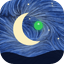
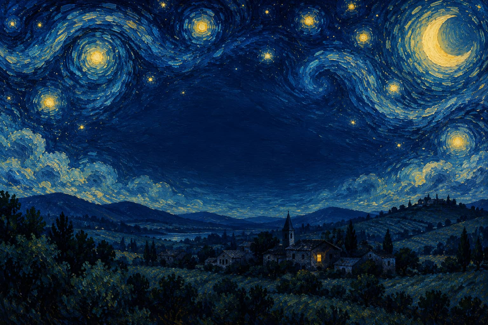

Ton Mac reste éveillé, ouvert ou fermé.
Normalement, un Mac portable s'endort dès qu'on rabat l'écran. Avec Nuit Blanche allumé, il continue de travailler, que tu le laisses sur le bureau ou que tu partes avec, capot fermé.

Nuit BlancheFR EN
Gratuit · notarisée par Apple
Un seul bouton, et ton Mac reste éveillé, même capot fermé. Tes agents IA, tes téléchargements, tes rendus et tes synchros continuent pendant que tu t'en vas.
macOS 14 ou plus récent Apple Silicon et Intel

Nuit Blanche
Ton Mac ne dort que si tu le veux.
Éveillé
Toujours éveillé
Ton Mac reste éveillé.
Partage de connexion
Rejoint ton iPhone dès qu'il apparaît.
Ce que fait Nuit Blanche
Normalement, un Mac portable s'endort dès qu'on rabat l'écran. Avec Nuit Blanche allumé, il continue de travailler, que tu le laisses sur le bureau ou que tu partes avec, capot fermé.
Active le partage de connexion sur ton iPhone et choisis-le une fois dans Nuit Blanche. Dès qu'il apparaît, ton Mac le rejoint tout seul. Par défaut, seulement quand il n'a pas d'autre accès à Internet, pour ménager ton forfait. Dans le train, au café, au fond du jardin : il ne décroche plus.
Sur batterie, sous 10 %, Nuit Blanche s'arrête, te prévient et laisse ton Mac se reposer. Branché, il ne s'arrête jamais. Tu peux aussi choisir une durée : 1 heure, 3 heures, ou jusqu'à ce que tu l'arrêtes.
Une petite lune avec un œil, en haut de l'écran : ouvert quand ton Mac veille, fermé quand il dort normalement. Un clic pour allumer, un clic pour éteindre, ou le raccourci ⌘⇧N.
Pendant que tu dors
Tout ce qui s'interrompait quand ton Mac s'endormait va maintenant jusqu'au bout.
Installer Nuit Blanche
Pas besoin d'être doué en informatique : suis les étapes, l'animation te montre où cliquer.
Questions
Oui. Nuit Blanche ne fait qu'une chose : dire à ton Mac de ne pas s'endormir tant que « Toujours éveillé » est allumé. Dès que tu l'éteins, ou que tu quittes l'app, ton Mac retrouve son sommeil normal.
L'app est notarisée par Apple : Apple l'a vérifiée avant que tu puisses l'ouvrir.
Capot fermé, ton Mac travaille comme d'habitude, il a donc besoin de respirer. Pose-le sur une surface dure plutôt que sur un lit ou un canapé, et ne le range pas dans un sac ou une housse pendant qu'il tourne.
Si tu dois le glisser dans ton sac, éteins d'abord Nuit Blanche d'un clic.
Un Mac éveillé consomme plus qu'un Mac endormi, c'est normal. C'est pour ça que Nuit Blanche surveille la batterie : sur batterie, sous 10 %, il s'arrête tout seul, t'envoie une notification et laisse ton Mac s'endormir. Dans Options, tu peux choisir 5, 10, 20 ou 30 %, ou jamais. Branché sur secteur, il ne s'arrête jamais.
Oui : quand ton Mac passe par ton iPhone, il consomme les données de ton forfait mobile, comme n'importe quel partage de connexion. C'est pour ça que, par défaut, Nuit Blanche ne le rejoint que quand ton Mac n'a pas d'autre accès à Internet. Tu peux aussi lui dire de toujours le préférer, ou couper l'option.
Pour rester éveillé capot fermé, Nuit Blanche s'appuie sur un petit assistant en arrière-plan. Une seule fois, macOS te demande de l'autoriser, sous « Autoriser en arrière-plan ». Pas besoin de chercher : un clic sur « Autoriser » ouvre le bon réglage, et un petit panneau t'indique l'interrupteur à activer. macOS peut te demander ton mot de passe à ce moment-là. Ensuite, plus jamais.
Si tu utilises le partage de connexion, macOS te demandera aussi l'accès à la localisation : c'est sa règle pour voir le nom des réseaux Wi‑Fi. Et Nuit Blanche te demande d'afficher des notifications, pour te prévenir quand il s'arrête tout seul. Rien de tout ça ne sort de ton Mac.
macOS 14 (Sonoma) ou plus récent.
Télécharge le fichier, ouvre-le, et glisse Nuit Blanche dans le dossier Applications.
Pour le désinstaller : dans le menu de la petite lune, choisis « Quitter ». Ton Mac retrouve sa veille normale en quelques secondes. Puis mets l'app à la corbeille.
Oui. Pas d'abonnement, pas de compte, pas de publicité. Rien n'est envoyé nulle part.
GratuitmacOS 14+Notarisée par Apple